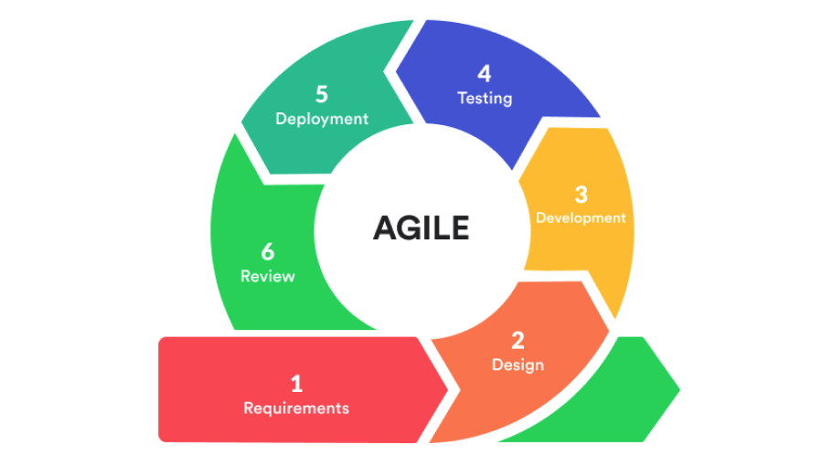

Agile on kaasaegne ja paindlik tarkvaraarenduse metoodika, mis rõhutab tihedat koostööd meeskonnaliikmete ja kliendi vahel, kiiret tagasisidet ning järkjärgulist tarkvara arendamist. Agile põhineb iteratiivsel arendusprotsessil, kus töö toimub lühikeste tsüklitena (sprintidena), mis tavaliselt kestavad üks kuni neli nädalat. Iga tsükli lõpus valmib töötav osa tarkvarast, mida saab kliendile esitleda ja mille põhjal saab tagasisidet koguda. Agile’i kasutamine võimaldab arendusmeeskondadel kiiresti kohaneda muutuva ärikeskkonna ja klientide nõudmistega, vältides pikaajalisi planeerimisvigu. Agile sobib eriti hästi projektidele, kus nõuded ei ole arenduse alguses lõplikult määratletud või kus need muutuvad arenduse käigus.
| Positiivsed küljed | Negatiivsed küljed |
|---|---|
| Paindlikkus ja kohanemisvõime | Ettenähtavuse puudumine |
| Suurenenud koostöö ja suhtlus | Vähene rõhuasetus testimisele |
| Parem kvaliteet ja usaldusväärsus | Meeskonna läbipõlemise oht |
| Suurenenud klientide rahulolu | Struktuuri ja juhtimise puudumine |